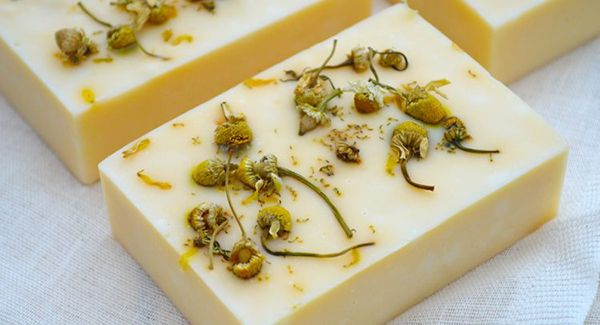
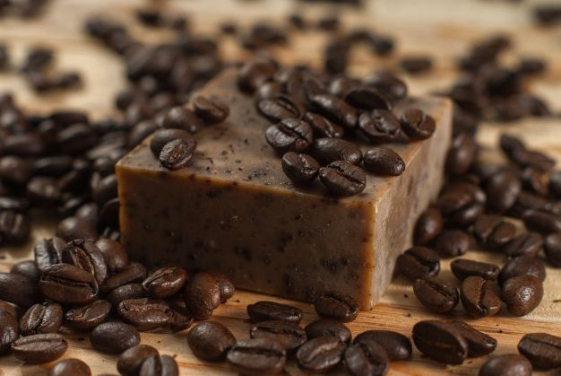
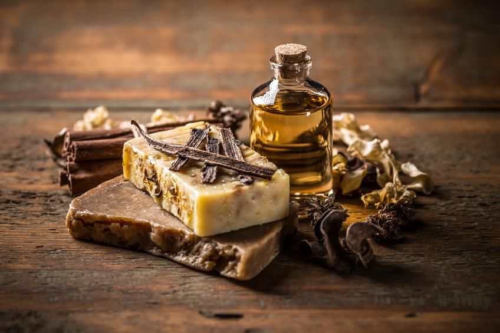
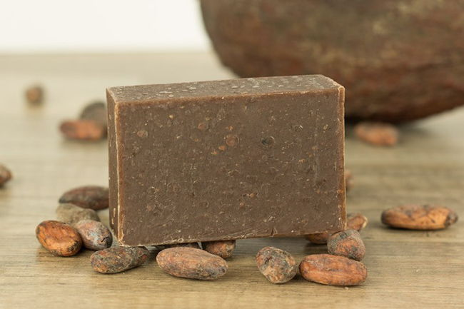

Tipos de jabones artesanales
Los jabones naturales son la mejor alternativa para el cuidado de tu piel, ya que contiene ingredientes beneficiosos y nutritivos para el rostro.
- Jabón de avena
- Jabón de manzanilla.
- Jabón exfoliante de café.
- Jabón de vainilla.
- Jabón de chocolate.



